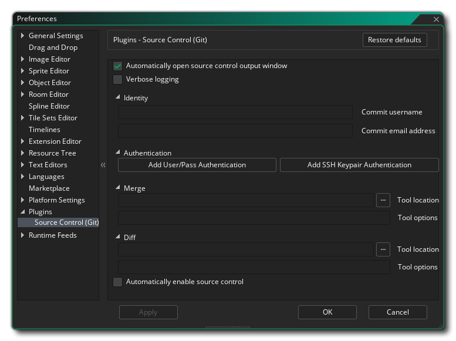

Las Preferencias de Plugins se usan para controlar cualquier complemento adicional que se haya agregado al IDE de GameMaker Studio 2. De manera predeterminada, esta cuenta con una sección dedicada al complemento de control de código fuente para integrar los proyectos de GameMaker Studio 2 con Git.
Esta sección trata sobre las preferencias que debe establecer para que el complemento Git SCM funcione con GameMaker Studio 2. Primero tienes el conjunto de opciones generales:
Luego está la sección de Identidad de usuario con los siguientes campos que deben completarse:
- Abrir automáticamente la ventana de salida de control de fuente: cuando está marcada, la ventana de salida de control de fuente se mostrará automáticamente cuando algo cambie. Esto está predeterminado.
- Registro detallado: habilite el registro detallado para el registro de salida de Git. Esto está desactivada por defecto.
- Nombre de usuario para confirmar como: Aquí debe ingresar el nombre de usuario que utilizará para hacer cualquier commit a Git (esto debe ser igual al nombre de usuario especificado cuando configura su repositorio de Git).
- Correo electrónico para confirmar como: el correo electrónico asociado a esta identidad de Git.
Después de configurar la identidad del usuario, puede agregar una nueva combinación de nombre de usuario / contraseña para la autenticación haciendo clic en el botón etiquetado Agregar nueva autenticación de usuario / pase, que abrirá la siguiente ventana con diferentes campos para que complete:
También puede Agregar una nueva autenticación de par de claves SSH haciendo clic en el botón con esa etiqueta. Esto abrirá la siguiente ventana para que completes:
Debajo de estos botones puede configurar la herramienta Merge y la herramienta Diff para SCM con estas opciones:
- Herramienta de ruta de acceso a la fusión: aquí se especifica la ruta de archivo completa a la herramienta de fusión de Git.
- Opciones para la herramienta de combinación: en este campo puede agregar cualquier comando adicional que se ejecutará cada vez que use la herramienta de fusión.
- Herramienta Path to Diff: aquí especifica la ruta completa del archivo a la herramienta diff de Git.
- Opciones para la herramienta Diff: en este campo puede agregar cualquier comando extra que se ejecute cada vez que use la herramienta Diff.
Finalmente, después de configurarlos, tienes una última opción:
- Activar automáticamente el control de fuente: cuando se marca esta opción, el control de fuente se habilitará automáticamente para todos los proyectos nuevos. Esto está desactivada por defecto.